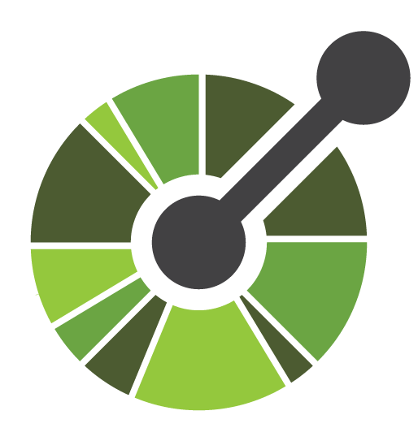

 OpenAPI
Usando um padrão para especificação de APIs
Documentação de API
Categorizando por conteúdo
https://stoplight.io/api-documentation-guide/basics/- Reference and functionality
- Guides and tutorials
- Examples and use cases
Categorizando pelo formato
Human Readable Machine ReadableHuman Readable
Machine Readable
 api blueprint
api blueprint
OpenAPI Specification
OpenAPI Specification
O que é?
OpenAPI Specification (OAS) define um padrão para descrição/definição de APIs REST através de um documento YAML ou JSON.Como surgiu?

Swagger

OpenAPI? Porque?
Doc-as-code
“In short, treating docs like code means to use the same systems, processes, and workflows with docs as you do with programming code.” idratherbewriting.com/learnapidoc
API First
Ferramentas
Lista de Ferramentas
https://openapi.toolsOpenAPI - Estrutura
$ (root)
{
"openapi": "3.0.2",
"info": {},
"components": {},
"paths": {},
"servers": []
}
$.info:
{
"title": "My Books",
"version": "1.0.0"
}
$.components:
{
"schemas": {},
"responses": {},
"parameters": {},
"headers": {}
}
$.components.schemas:
{
"book": {
"type": "object",
"properties": {
"id": { "type": "string" },
"title": { "type": "string" },
"author": { "type": "string" }
},
"required": [ "title", "author" ]
},
"book-list": {
"type": "array",
"items": {
"$ref": "#/components/schemas/book"
}
}
}
$.paths:
{
"/books": {
"get": {
"responses": {
"200": {
"content": {
"application/json": {
"schema": {
"$ref": "#/components/schemas/book-list"
}
}
}
}
}
},
"post": {}
},
"/books/{bookId}": {}
}
$.paths:
{
"/books": {},
"/books/{bookId}": {
"get": {
"responses": {
"200": {
"content": {
"application/json": {
"schema": {
"$ref": "#/components/schemas/book"
}
}
}
}
}
}
}
}
$.paths:
{
"/books": {},
"/books/{bookId}": {
"get": {},
"parameters": [{
"name": "bookId",
"in": "path",
"schema": {
"type": string
}
}]
}
}
$.servers:
[{
"description": "Development Server",
"url": "http://localhost:3000"
}, {
"description": "Production Server",
"url": "https://api.zenvia.com"
}]
Referencia OpenAPI
https://github.com/OAI/OpenAPI-SpecificationHands-On
Hands-On
ReDoc - Criando a especificação
~$ mkdir books-api && cd books-api
~/books-api$ npx create-openapi-repo .
Welcome to the OpenAPI-Repo generator! Do you already have OpenAPI/Swagger spec for your API? No Select OpenAPI version: OpenAPI 3 API Name: books-api Split spec into separate files? Yes Prepare manual code samples folder? No Install SwaggerUI? No Set up Travis CI? Yes Specify name of GitHub repo in format User/Repo:
hmagarotto/books-api-spec
~/books-api$ npm start
http://localhost:8000
Vamos recriar nossa API "Books" com o ReDoc!
Hands-On
Prism - Criando um mock server
~/books-api$ npm run build
~/books-api$ npx -p @stoplight/prism-cli \
prism mock -p 3000 ./web_deploy/openapi.json
curl -s 'http://localhost:3000/books' | jq
Hands-On
Swagger-UI - Interagindo com o server
~/books-api$ docker run \
-p 9000:8080 \
-v${PWD}/web_deploy/openapi.json:/openapi.json \
-e SWAGGER_JSON=/openapi.json \
swaggerapi/swagger-ui
Obrigado
PLATAFORMA DE COMUNICAÇÃO
Revolucione a comunicação com seus clientes via
SMS, voz, WhatsApp, e-mail ou aplicativos de mensagens.
Mais engajamento, mais resultados.
Henrique Magarotto
henrique.magarotto@zenvia.com
hmagarotto
Rodrigo Kamada
rodrigo.kamada@zenvia.com
rodrigokamada